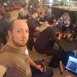
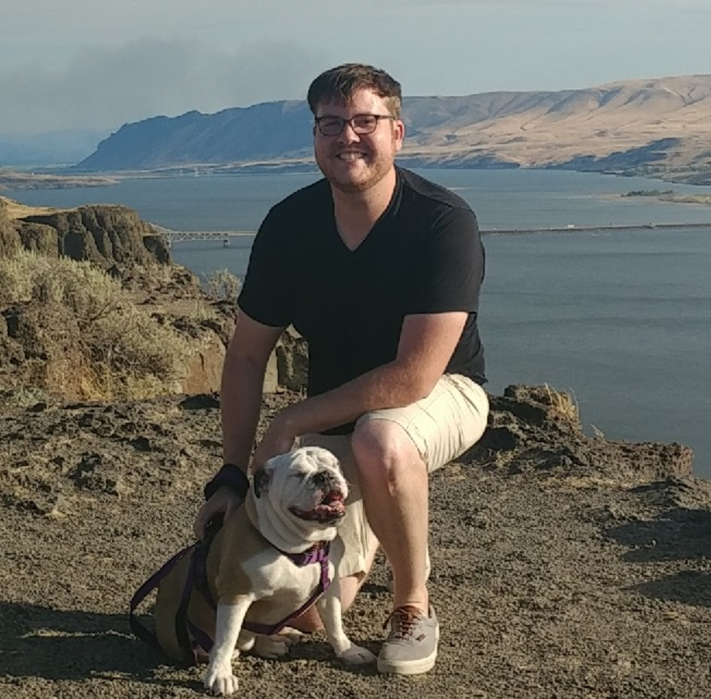

About SwoleFellows:
SwoleFellows was made as a tool to help those looking to get into working out, by allowing the user to search for exercises and filter out these exercises by the muscle group they are looking to work on or by the equipment availabl to them. SwoleFellows uses the API provided by Wger for the exercises.
About Richard:
My name is Richard Montgomery. I've had an interest in coding since high school many years ago, but never fully committed. I have books on C++, Java, and Python sitting on a shelf at home as pristine as they were in the store. Now I'm back on a path of higher education, learning to code at CodeFellows. Completing 301, I realize there's a lot for me to improve on, but retrospectively, I know more about coding now than ever before. I plan to become a full stack JavaScript web developer and I look forward to the three months ahead for 401.
About Daniel:
Prior telecommunications/satellite communications network manager turned code monkey. I'm here to build and perfect my skills as a full-stack developer in hopes of making a career hop to something that interests me vastly more than my previous career. As an active member of the developer community I look forward to working with many interesting people throughout the coming years.
About Dean:
Hi, my name is Dean. I came out from Florida to attend CodeFellows here in Seattle. Ever since I was young I've had a passion for computers, whether it came to building them or gaming. After entering the workforce I came to realize that a lot of companies have their own in house software systems, and to be frank a lot were not great. I hope to use what I learn at CodeFellows to become a Full-Stack Javascript Developer and expand my toolbelt and possibilities even more with the tools given to me by CodeFellows.
Thank you SwoleFellows!
"Before using SwoleFellows I was simply accumulating mass, turning my body into a glorious slab of marble to chip away and turn into a beautiful sculpture. However, I was unsure about where to begin after turning into the muscle-bound monster you see here. But thanks to SwoleFellows I was able to find information on workouts, and plan and commit and get results. When giving myself an ocular patdown in the mirror I can't help but be impressed by my results. Just see for yourself!" - Ronald MacDonald